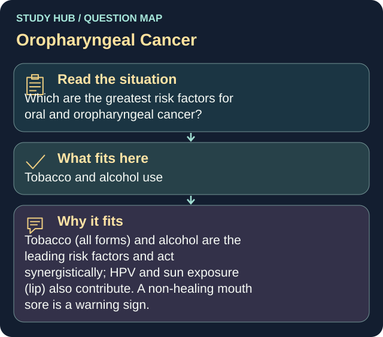

Which are the greatest risk factors for oral and oropharyngeal cancer?
Answer
Tobacco and alcohol use
Reasoning
Tobacco (all forms) and alcohol are the leading risk factors and act synergistically; HPV and sun exposure (lip) also contribute.
Clinical detail
A non-healing mouth sore is a warning sign.
Why the other answers do not fit
- High dairy and gluten intake
- Excess caffeine
- Chronic NSAID use
Shared reasoning for choices without a separate note: Tobacco (all forms) and alcohol are the leading risk factors and act synergistically; HPV and sun exposure (lip) also contribute. A non-healing mouth sore is a warning sign.
